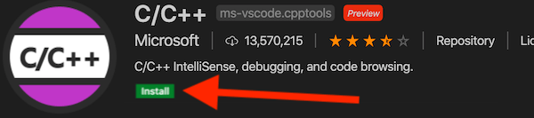

In this lab assignment you will learn about:
Install the downloaded program as appropriate for your system.
If you are on Windows, open the installer and follow the prompts to complete the installation.
If you are on a Mac:
Install the C/C++ extension from Microsoft.
Install the Live Share extension from Microsoft.
Install compilation tools for your system.
Type xcode-select --install and press enter.
If you've already done some programming on your system before, you may see an error message. That's fine, it means you already have the tools and are ready to go!
A dialog will appear asking if you would like to install the command line developer tools.
Choose the "Install" button and wait for the download and installation to complete.
Type gcc and press enter.
If you see a "command not found" error, ask for help!
If you see "error: no input files", everything is working correctly!
Download the hello_world.c source code below, and move it into this folder.
Download hello_world.cDon't worry about understanding all of this code for now; we'll be learning about each piece later!
The red squiggly underlines in our code (and red text in the Explorer pane) are indicating that this source file has an error. We cannot compile or run our code until all errors are fixed (yellow underlines will appear for warnings that indicate potential problems but won't prevent your code from compiling and running). Hover your mouse over the underlined code or open the Problems panel (View > Problems in the main menu) to find out what's wrong.
The error messages you get from the compiler can be quite cryptic, especially when you're just starting to program. They tend to be fairly short and use a lot of specialized jargon.
Do not depair! You will learn what a lot of this jargon means throughout this course, and as you get more experienced, just knowing where the error occurs can often be enough for you to spot the problem.
In the meantime, the most common errors you will see when you are just beginning will be:
#include the header where it is defined.If you're stumped, ask for help during a lab session or post a question on the course forum!
Open the terminal panel (ctrl+`), type gcc hello_world.c, and press enter
If all went well, there should be no errors or warnings reported, and a new a.out file will appear in the Explorer panel. If not, ask for help!
Type ./a.out in the terminal and press enter.
You should see the words "Hello world!" appear just below your command. Congratulations, you've just compiled and run your first C program!
Extend the hello_world program to also output:
That comp-166 folder is going to get messy quickly if we just dump everything in there for every lab. Let's make some sub-folders to keep it organized, and setup VSCode to do some of the grunt work for us.
Now that your code is in a folder, it's a little more tedious to compile it from the terminal. You'd have to type:
gcc LastnameFirstname_lab0/hello_world.cFortunately, VSCode can do this for us!
Choose Terminal > Configure Default Build Task… from the main menu (and press enter if asked to choose which tool to use).
You should now be looking at a tasks.json file that was generated for you. We'll need to modify this file slightly so that VSCode doesn't output the program in the same folder as the source. We'll add a little more error checking at the same time.
There should be section of this file that currently looks like this:
"args": [
"-g",
"${file}",
"-o",
"${fileDirname}/${fileBasenameNoExtension}"
],
Change that section to read:
"args": [
"-Wall",
"-Wextra",
"-Wpedantic",
"-std=c99",
"-g",
"${file}",
"-o",
"${fileBasenameNoExtension}"
],
and save your changes.
Switch back to your hello_world.c file and test that the build works by choosing Terminal > Run Build Task… from the main menu.
Notice that a new file (or two) has appeared in the Explorer pane. With this configuration, VSCode will create an executable with the same name as your source file, instead of the default "a.out" we got in Task 2.
Open the terminal and test that you can run your program. Eg:
./hello_worldCreate a ZIP archive of your lab-0 folder, including the folder itself. Make sure that it includes your hello_world.c source code and does not include any compiled programs.
To create a ZIP file on MacOS:
To create a ZIP file on Windows:
Submit your ZIP file to the Lab-0 assignment on D2L.
All future labs will be submitted in the same way, but will not include a separate task and instructions for this process!
Completing all tasks in this lab should result in a hello_world.c program inside of a Lab-0 folder named like LastnameFirstname_lab0. Create a ZIP archive containing this entire Lab-0 folder and upload it to the D2L assignment. Do not include compiled binaries in your submission.
NOTE: This assignment is to be done individually. You can help one another with problems and questions, but in the end everyone must write and submit their own code.
| Criteria | Marks |
|---|---|
| Submitted code to D2L with correct packaging | 1 |
| Total | 1 |